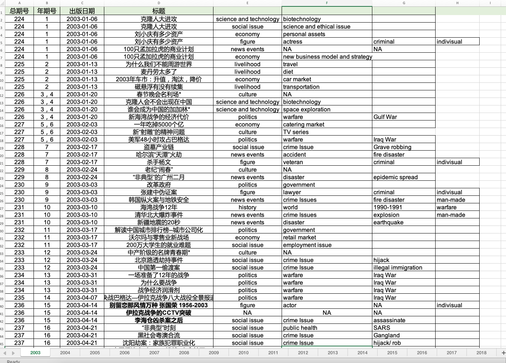
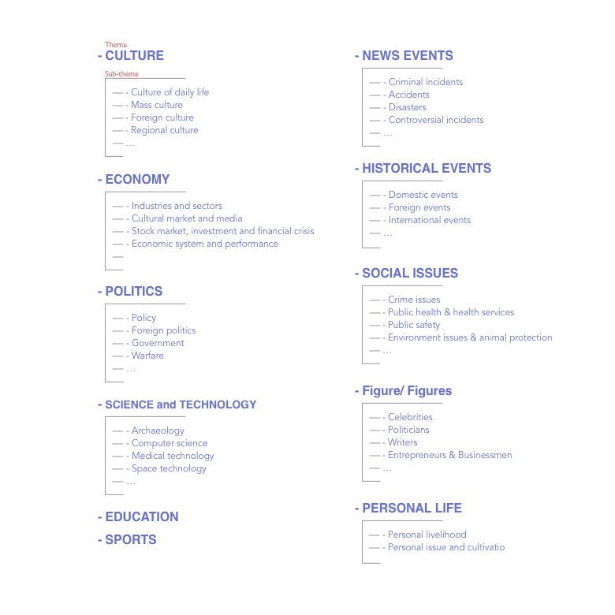
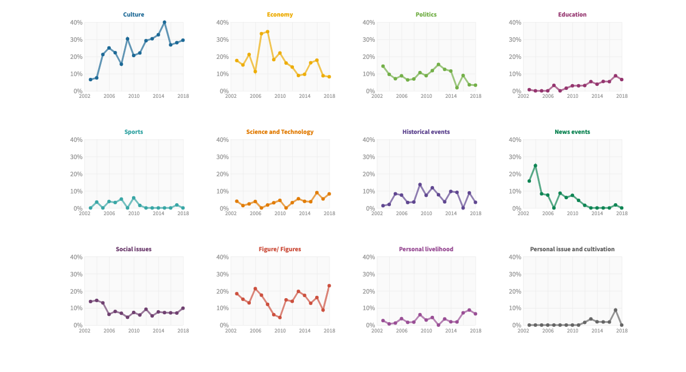

PROCESS
PROJECT ENVISION
The contents of this project were arranged from general to specific.
-
First, it introduces the general information and the history of Sanlian Lifeweek.
-
Then, it presents the changing trend of the covers’ headlines based on different themes, like “Culture”, “Economy”, and subthemes, like “Mass Culture”, “Foreign Culture”, “Industries and Sectors”, “Culture Market and Media”.
-
And finally, the project provides more details on each theme.
More detailed documentation is available in my project journal: Project Proposal.
DATA COLLECTION & ANALYSIS
I spent almost two months to collect and analyze the data (more than 800 headlines) from the online archive of Sanlian Lifeweek manually. The biggest challenge in this part is almost all the headlines can be categorized into at least two themes, and many are needed to check the contents inside the magazine to confirm their themes. The themes and subthemes summarised from the data collection & analysis are shown beneath.
More detailed documentation is available in my project journal: First Layer of Categories, Second Layer of Categories
 PROTOTYPE
Before visualzing the data with d3.js, I used Flourish as the prototyping tool.
IMPLEMENTATION
After finishing the implementation with HTML, CSS, and d3.js, I created a new version using React.js. With React.js the codes become more structured and reusable.
REFLECTION
I first implemented d3.js, and later learned how to combine React.js with d3.js in this project. I found for a small project like this, it would be complicated to use React.js. And one main reason for all these changes on the cover of Sanlian Lifeweek might origin from the market, not the political environment, which was my guess before.
Next Step
-
use R to do a color analysis for all the covers.
-
find a machine learning library to analyze the image appearing on the covers.
-
explore more topics with the data I collected.